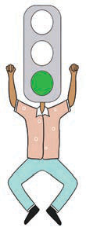

Chapter Two
Safety signs
I adhere to the road safety signs
There is an orange coloured cat sitting and looking forward directing attention as it introduces the next learning activity
I observe the road safety signs in order to be safe.
Activity 1
Perform a boasting to describe the uses of road safety signs.
A children’s crossing sign is held above a person standing with one hand out.
I am a children’s crossing sign. Use me to cross the road safely.

A traffic light character shows a green light and lifts both arms.
I am a green traffic light. When I turn on, I allow people, cars, motorcycles and bicycles to pass.